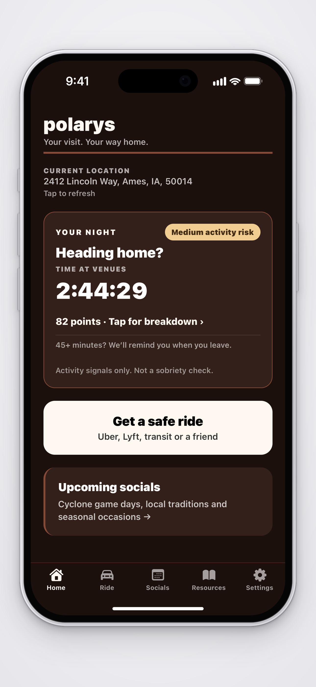
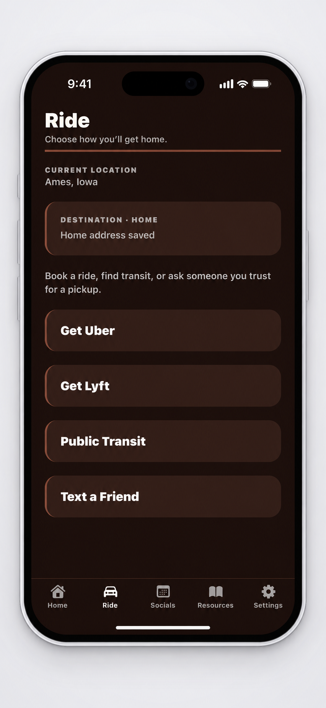

Set it up before you go.
Save your home address and allow location access and notifications. Polarys uses visits to bars to keep track of your night.
What permissions does it need?
Leaving the bar? Polarys can remind you to sort out a ride.
Uber, Lyft, transit, or a friend. All in one place.
Now testing on iPhone through TestFlight.
A night with Polarys
Click through to see how it works.
Before the reminder
With location access set up, Polarys recognizes visits to bars. You can also save a friend’s place for house-party nights.
App walkthrough · Screens shown for illustration.
Personal
addresses removed from the ride screen.

How it works
Save your home address and allow location access and notifications. Polarys uses visits to bars to keep track of your night.
What permissions does it need?After you’ve spent time at a bar, Polarys can notice you leaving and ask, “How are you getting home?” Tap the notification to open your options.
Open Uber or Lyft with your saved home as the destination, check public transit, or text a friend. You can also open the Ride tab yourself, any time.
Polarys is a reminder, not a sobriety test. It can’t tell you whether you’re safe to drive.

Not every night starts at a bar
You can save their place, too.
Give the address a name you’ll recognize in Settings. Polarys can send the same kind of departure reminder when you leave a saved house-party address.
Save up to ten places and remove them whenever you want. Your home address is separate—getting home ends your night.
More about when reminders workA few things to know
It helps to get this sorted
while you’re still at home.
Save your home address in Settings, then allow Always location access, Precise Location, and notifications. Add any friends’ places you want Polarys to recognize.
Location access helps the app recognize visits and departures. Notifications let it send the ride reminder. You can manage permissions in your iPhone’s Settings.
Read the privacy policyPolarys looks for visits to bars and saved party addresses between 9 in the evening and 5 in the morning, in your local time. After at least 45 minutes at these places, detecting your departure can trigger a reminder.
Reminders depend on your permissions, GPS, and iOS. They can arrive late or fail to arrive. Make a plan before you leave, and open the Ride tab whenever you need it.
No. The activity level on the home screen is based on venue time and a qualifying connection to a saved car. It does not measure alcohol or tell you whether you can drive.
If you say you were planning to drive, the app asks how much you’ve had to drink. Your answer isn’t saved, and every answer leads to ride options.
You can save your car’s Bluetooth connection in Settings. After time at a bar, a connection to that car can prompt Polarys to encourage another way home.
Keep Polarys open for car detection. This is another reminder to consider a ride, not a way to measure sobriety.
Polarys is currently an iPhone beta. Open the beta link on your iPhone, install Apple’s TestFlight if prompted, then accept the invitation to install Polarys.
Open the TestFlight invitationThe person behind Polarys
I’m an Iowa State student building Polarys. The idea is pretty simple: getting home should be part of the plan, even when the rest of the night wasn’t planned at all.
I named it after the North Star. I liked the idea of something that helps you find your way home. I’m testing the iPhone app with friends and working through what’s useful on an actual night out.
Tried it? Tell me how it wentGive it a try
Set up Polarys before you head out.